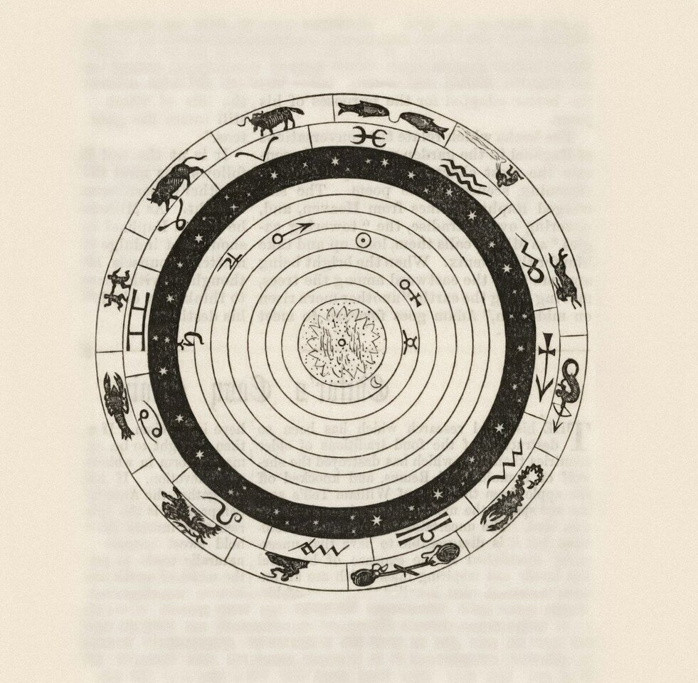

Trusted by thousands of callers nationwide
Birth Chart Reading by Phone - Your Natal Chart Decoded, 24/7
Your birth chart reading is the closest thing there is to an owner's manual for you. Every astrologer on our line is hand-vetted by our master psychics - connect in under 60 seconds. Your first minute is $1 and you can hang up anytime.
- Hand-vetted readers
- Available 24/7
- Hang up anytime

Call and speak with a live astrologer for a birth chart reading that explains why you are the way you are - and what your chart says you're here to do. No appointment, no waiting - first-time callers get an introductory rate of $1 per minute, or 15 minutes for $10, and you can hang up the moment you have your answer.
What Is a Birth Chart Reading?
A birth chart reading interprets the exact map of the sky at the moment and place you were born - where the Sun, Moon, and planets sat, the sign rising on the eastern horizon, and how it all divides into twelve houses of life. Your astrologer reads that snapshot like a blueprint of your wiring: your core nature, your emotional needs, how the world meets you, and the themes your life keeps circling back to. It isn't a daily horoscope. It's the deep, personal version - built from your details, not your Sun sign alone.
Is a Birth Chart the Same as a Natal Chart?
Yes - "birth chart" and "natal chart" are the same thing, used interchangeably. Both describe your personal sky-map at birth. A natal chart interpretation and a birth chart reading deliver the same depth; the only difference is the word. So if you've been told you need a natal chart interpretation, this is exactly that.
How Does a Birth Chart Reading Work by Phone?
Your astrologer calculates your chart from your birth details on their end, then talks you through it live. Astrology doesn't depend on the reader being in the room - the chart is the chart whether you're across a table or across the country. You give your date, time, and place of birth, your astrologer pulls the wheel, and they walk you through what each placement means for you, pausing for your questions as they go.
What Information Do I Need for a Birth Chart Reading?
Three things, in order of importance:
Date of birth
Sets your Sun sign and the planetary positions.
Time of birth
The big one - it fixes your rising sign and all twelve houses. Check a birth certificate if you can.
Place of birth
City is enough; it anchors the chart to a location and time zone.
Don't have an exact time? You'll still get a strong reading - your astrologer can work with an approximate time and focus on the placements that don't depend on it.
What Does My Birth Chart Actually Tell Me?
More than most people expect. The big three set the foundation: your Sun is your core identity and what you're growing toward, your Moon is your emotional inner world and what you need to feel safe, and your Rising sign is the face you lead with and how others first read you. From there your astrologer layers in Venus (love and values), Mars (drive and anger), Mercury (how you think and speak), and the houses that show where in life these energies play out - career, relationships, home, money. Read together, it explains patterns you've felt your whole life but never had language for. You can read more about the birth chart and horoscope if you want the background.
Who Is the Best Astrologer to Call for a Birth Chart Reading?
The best astrologer for your chart is one who reads it as a living story about you - not a recited list of placements. Every reader on our line is hand-vetted by our master psychics, so you're not gambling on a stranger from a directory. When you call, say you want a full birth chart reading and we'll match you with the astrologer whose strength is natal work, usually in under 60 seconds. If the connection isn't right, hang up anytime, and our 100% satisfaction promise stands behind the call.
What Do I Do If I Don't Know My Birth Time?
Don't let it stop you - this is one of the most common questions astrologers get. A lot can be read from the date and place alone: your Sun, the Moon's sign on most days, the planetary aspects, and the broad shape of your chart. What an unknown time blurs is the rising sign and the exact house cusps. A skilled astrologer will either work with a noon chart, ask questions about your life to estimate the time (a process called rectification), or simply focus the reading on what's solid. You'll still walk away with real insight - and you can always call back if you later find your birth certificate.
Common Reasons People Get a Birth Chart Reading
People reach for a birth chart reading at the moments they want to understand themselves, not just predict a week:
"Why do I keep repeating the same patterns?"
The chart names the loop.
"What am I actually here to do?"
Purpose and direction from the houses.
"Why do I love the way I do?"
Venus and the relationship houses.
"What are my real strengths?"
Where your chart is most supported.
"Why does this challenge keep showing up?"
The hard aspects, explained kindly.
"Is this a big year for me?"
How current transits hit your chart.
Birth Chart Reading vs. Horoscope vs. Compatibility Reading
They're related but different in scope. A birth chart reading is the deep, personal interpretation of your own natal wheel. A horoscope is a general forecast based mainly on your Sun sign. A compatibility (synastry) reading compares two charts to see how two people interact. Many callers start with their birth chart to understand themselves, then move into a love astrology reading or an astrology compatibility reading once they want to look at a relationship.
How to Prepare for Your Birth Chart Reading
Track down your birth time before you call - a birth certificate, baby book, or a parent's memory all help, though it's not a dealbreaker if you can't. Find a quiet space, have your date and city ready, and bring one or two areas you most want decoded so the reading goes deep instead of wide. And the practical part: first-time callers pay $1 per minute, you can do 15 minutes for $10, and you can hang up the moment you have what you need.
Finally Understand How You're Wired
Your chart has been there since the day you were born - let an expert read it to you. We'll connect you with the right hand-vetted astrologer in under 60 seconds. $1/min first call · 15 minutes for $10 · hang up anytime · 100% satisfaction promise.
Call (888) 920-6662 NowWhat Callers Say About Their Birth Chart Reading
"She explained my moon and rising in five minutes and I felt seen in a way I can't describe. Things about myself I'd struggled with for years suddenly made sense."
"I didn't have my exact birth time and figured it was pointless. He worked with what I had and still nailed my patterns. Worth every minute."
Explore every reading type on our phone psychic readings hub, or look at love with a love astrology reading.
Birth Chart Reading - Frequently Asked Questions
What is a birth chart reading?
It interprets the map of the sky at the exact moment and place you were born - the planets, signs, houses, and aspects that shape your personality and patterns.
Is a birth chart the same as a natal chart?
Yes - the terms are interchangeable. A natal chart interpretation and a birth chart reading deliver the same depth.
What information do I need?
Date of birth, birth time as precisely as possible, and birth city. Time matters most because it sets your rising sign and houses.
Does it work over the phone?
Yes. Your astrologer calculates and interprets your chart on their end while discussing it with you live; distance doesn't affect it.
How much does it cost?
First-time callers pay $1/min, or 15 minutes for $10. Returning callers pay the per-minute rate, and you can hang up anytime.
What if I don't know my birth time?
You'll still get a strong reading. Your astrologer can use an approximate time or focus on placements that don't depend on it.
What can a birth chart reading tell me?
Your core personality, emotional needs, how others see you, strengths and challenges, and your relationship and career patterns.
How often should I get one?
Your natal chart doesn't change, so one deep reading lasts. Many callers return for transit updates when a big year or decision arrives.
Get Your Birth Chart Reading Now
Here's what happens when you call: you're connected to a hand-vetted astrologer in under 60 seconds, they pull your chart, and you hang up understanding yourself on a whole new level.
- Hand-vetted astrologer
- Connected in under 60 seconds
- $1/min first call · 15 min for $10
- Hang up anytime
- 100% satisfaction promise